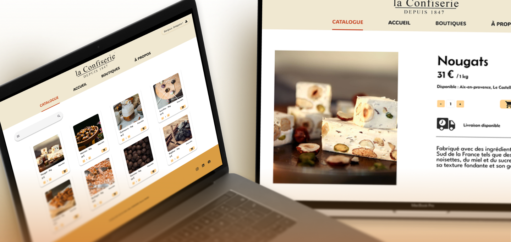
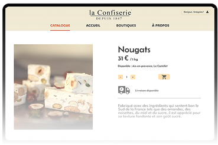
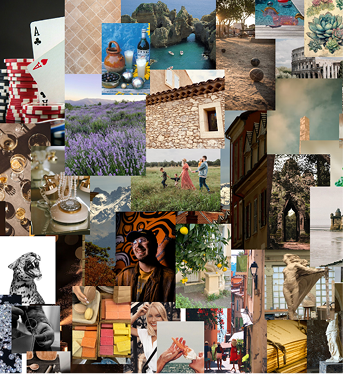
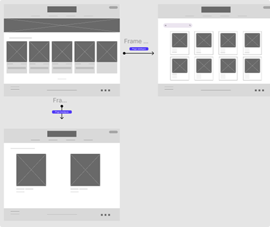
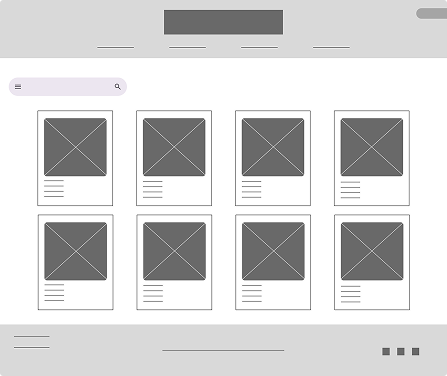
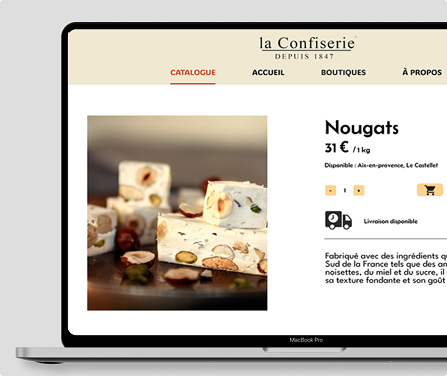
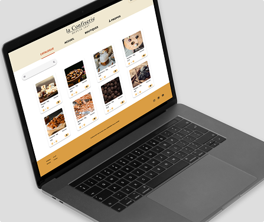

CONTEXTE
La Confiserie est une entreprise fictive qui souhaite moderniser son réseau de
boutiques en
mettant en place un site internet.
L’entreprise souhaite que le client puisse visualiser les informations sur les boutiques
(stocks, horaires, catalogue), et que le gérant puisse modifier les stocks et confiseries de sa
boutique.
Tout a été développé from scratch avec HTML, CSS, PHP et JS.
Ce projet a été réalisé en binôme avec Alban DESBORDES.
OUTILS UTILISÉS
Figma
Visuels, wireframes, mockups
VS Code
HTML, CSS, PHP, JS
GitHub
Versioning, collaboration

étapes
Planification et Exploration : Planche univers

La première étape a consisté à lire le brief du client pour
connaître son histoire
et ses valeurs, afin de créer un site représentatif de la marque.
Ainsi, nous avons élaboré une planche univers : un côté orientaté
luxe mettant en
avant la tradition familiale, une thématique autour du sud ancrée
dans les origines
de la marque, et un thème vintage pour l’ancienneté de la
Confiserie.
C'est finalement l'univers luxe mélangé au sud qui
a été retenu pour son
aspect sobre et chaleureux.
Ce choix se traduit en une interface aux contrastes marqués avec
des visuels aux
tons chauds et des photos bien travaillées.
Idéation : Architecture du site


Une fois le thème choisi, nous avons conçu l’architecture du site avec un côté client et un côté gérant : page d’accueil, page de catalogue et page détail produit, page d’ajout/suppression.
Génération : Conception de l'interface


Enfin, nous avons transformé les maquettes en un site fonctionnel développé from scratch. Nous avons utilisé du HTML, CSS, PHP et JS pour faire le site.
CE QUE JE RETIENS
Le site Confiserie m’a appris a travailler en binôme sur la création d’un site internet.
En effet, jai appris a utilisé GitHub en simultané, à répartir les tâches dans les
étapes de
développement et à communiquer avec mon binôme pour le bon déroulé du site web.
Si je devais refaire le site, je referai l’interface et les couleurs car avec le temps, je n’aime
plus l’identité visuelle.